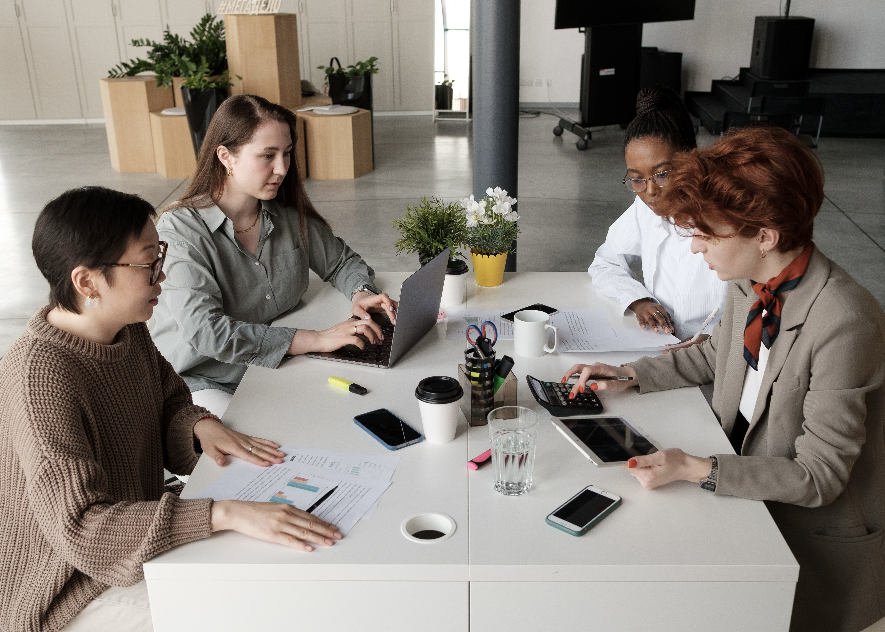

At NOVA, every project begins with a question: how can a space become more than its form? We approach architecture and interior design as an opportunity to explore new ideas, challenge conventions, and rethink the relationship between people and their surroundings. Through the thoughtful use of materials, spatial composition, and detail, we create environments that are distinctive in character and intentional in every element.

Our process is guided by curiosity, experimentation, and a constant pursuit of new perspectives. We believe that meaningful design emerges from the balance between creative vision and practical purpose, where each decision contributes to a larger concept. Rather than following a single aesthetic, we allow the identity of each project to develop through its context, function, and the possibilities it presents. This allows us to create work that feels individual, considered, and relevant to the people who experience it.
From intimate residential spaces to dynamic commercial environments, we seek to find the potential in every project. We explore how light can transform a room, how materials can establish an atmosphere, and how the arrangement of space can influence the way people move, gather, and connect. These considerations shape our work beyond its visual appearance, bringing together functionality, expression, and a lasting sense of identity.